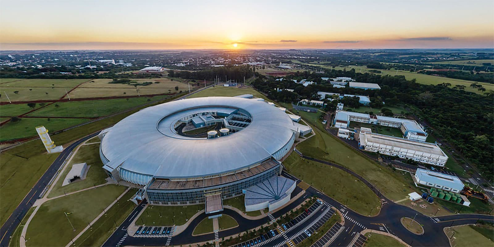
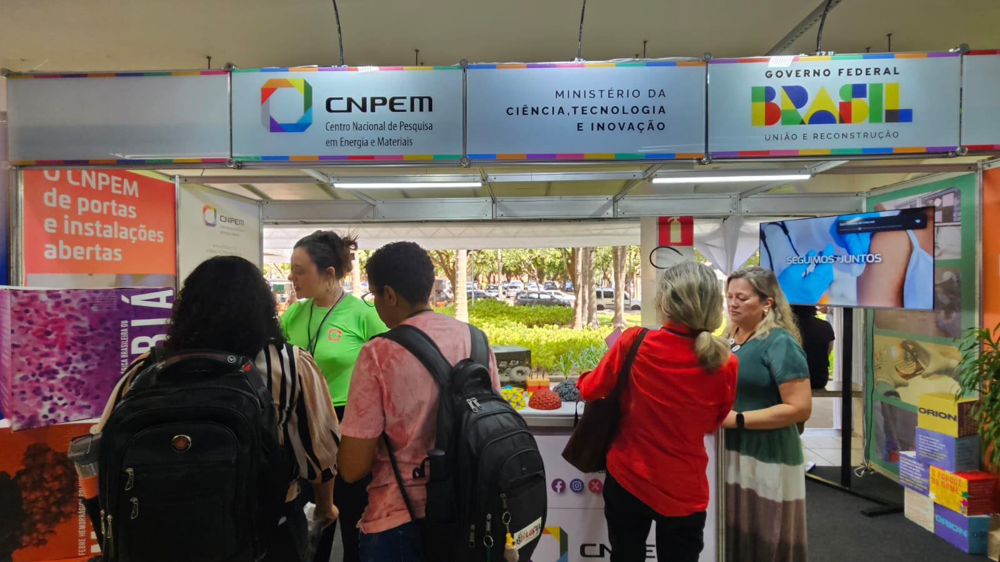
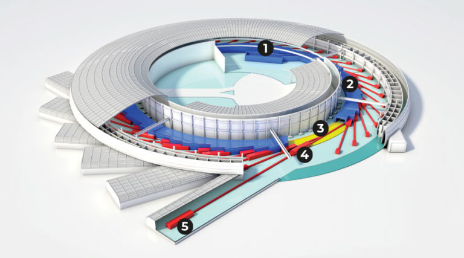

CNPEM, tecnologia e ciência de ponta no Brasil.
Nos dias 29 e 30 de maio, o CNPEM realiza a 7ª edição do Ciência Aberta, com experimentos interativos e visitação gratuita.
A visita ocorre das 09h às 15h. O dia 30 é aberto ao público geral. Durante o evento, é possível circular pelo campus e conhecer o acelerador de partículas Sirius.

O Sirius é o principal destaque do centro, sendo o acelerador de partículas mais avançado da América Latina.

O projeto começou após o UVX (1997), primeiro acelerador da região. Entre 2010 e 2020, o Sirius foi construído com tecnologia majoritariamente nacional.

O Sirius contribui para pesquisas em doenças como COVID-19, dengue e Alzheimer, além de estudos em energia e sustentabilidade.

Uma experiência única
O Ciência Aberta permite conhecer de perto como a ciência funciona na prática, com acesso a laboratórios e pesquisadores.
Você pode explorar tecnologias reais, entender pesquisas e descobrir como a ciência impacta o dia a dia.
Para estudantes, é uma oportunidade de inspiração e contato direto com o ambiente científico.
O CNPEM atua em áreas como saúde, energia e materiais, sendo referência nacional em pesquisa científica.
Visite o CNPEM
Inscreva-se e conheça de perto um dos maiores centros científicos do Brasil.
Quero visitarPor que visitar
o CNPEM?
🔬 Estrutura única
Conheça laboratórios avançados como o Sirius e entenda como funcionam pesquisas de ponta no Brasil.
🎓 Aprendizado científico
Ideal para estudantes e entusiastas da ciência que desejam vivenciar um ambiente real de pesquisa.
🌎 Impacto global
Projetos desenvolvidos no CNPEM contribuem para saúde, energia sustentável e novos materiais.